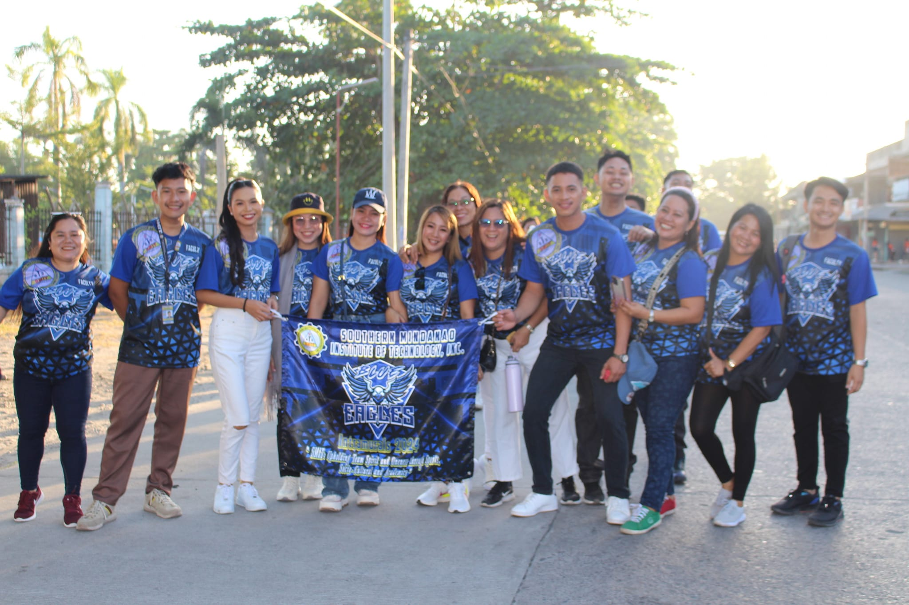
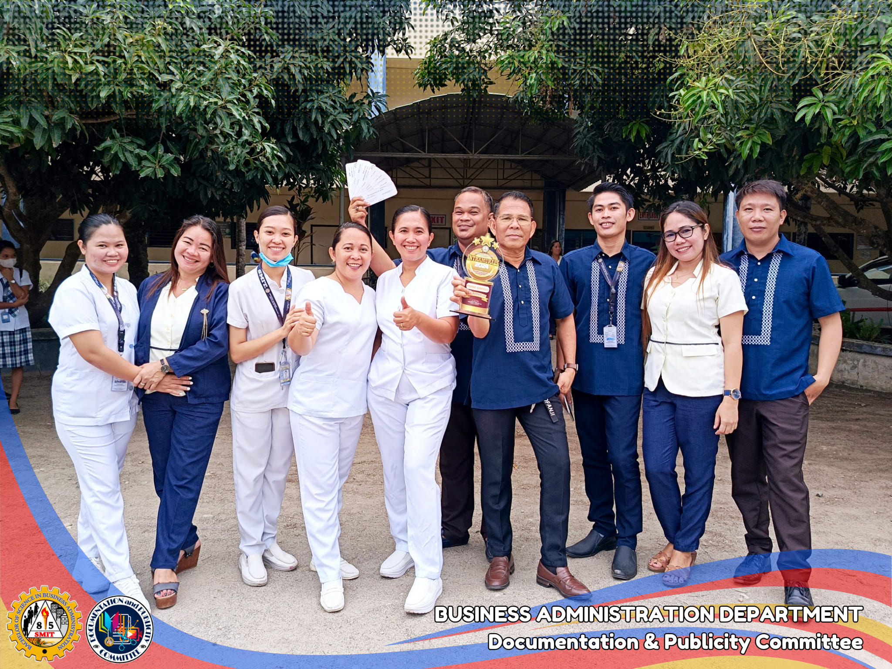
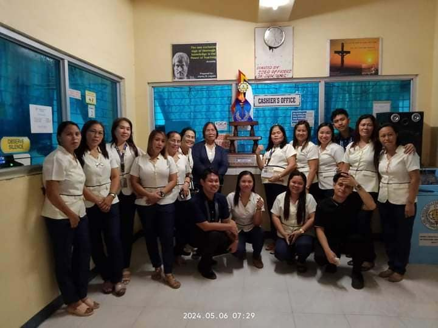

Welcome to SMIT
Your journey towards academic excellence starts here. Explore our programs and campus life.

National Highway Brgy. Buenaflor Tacurong City
Your future begins here
Your journey towards academic excellence starts here. Explore our programs and campus life.
Southern Mindanao Institute of Technology Inc. (SMIT) is committed to providing quality education that empowers students to achieve their full potential. Our institution prides itself on a diverse and inclusive learning environment, dedicated faculty, and a wide range of programs designed to meet the needs of the modern workforce.
The Southern Mindanao Institute of Technology Inc. (SMIT) is a leading educational institution dedicated to fostering academic excellence, character development, and nation-building. Established in 1985, SMIT has been at the forefront of providing quality education and producing competent professionals.
Our campus is equipped with state-of-the-art facilities, experienced faculty members, and a supportive learning environment, ensuring that students receive the best possible education to succeed in their chosen careers.
Faculty & Staff
  VISION
Southern Mindanao Institute of Technology Inc. (SMIT) is a learning-centered institution committed to quality education.
MISSION
Southern Mindanao Institute of Technology Inc. (SMIT) commits to provide the community with competent, ethical, research-oriented graduates through:
CORE VALUES
Southern Mindanao Institute of Technology Inc. embraces the values of SERVICE, MODESTY, INTEGRITY, and TRUST.
SMIT offers a variety of programs to cater to the diverse interests and career goals of our students. Our programs include:
If you have any questions or need more information, please feel free to reach out to us:
Email: smit@thebest.com
Phone: (064) 200-3549
Address: National Highway, Brgy. Buenaflor, City of Tacurong